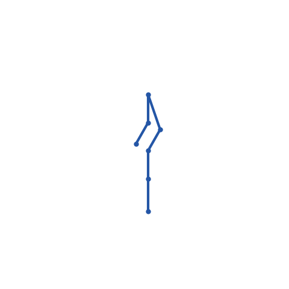

Prototype Scope
The branch adds JointType.MIMIC, stores leader/coefficient/follower-axis metadata on
joints, evaluates mimic followers inside the FK kernel, and exposes a URDF prototype switch that can
import representable <mimic> tags as zero-DOF joints.
The animation is a minimal Robotiq-2F85-style two-finger kinematic tree: one driver joint and five follower joints. It isolates the mimic relationship from the full menagerie asset's tendons, contacts, and closed-loop equality constraints.
Measured Snapshot
| Representation | FK timing | Extra propagation | Interpretation |
|---|---|---|---|
| Mimic as joints | 64.35 us mean on CUDA | None | Single FK path with one independent driver coordinate. |
| Separate mimic constraints | 56.90 us mean with already propagated follower q | 207.51 us for host q propagation plus FK | Raw FK is comparable, but kinematics-only use needs an extra coordinate propagation step. |
The raw data is available as mimic_joint_report.json.
Solver Adaptation
FK and IK are the cleanest fit: the follower has no independent coordinate and its transform can be derived inline from the leader coordinate. This matches the user-facing mental model in URDF and USD, where mimic metadata is attached to joints.
Maximal-coordinate solvers such as XPBD and Kamino still need equality/connect constraints for closed-loop dynamics and contact-consistent force transfer. A zero-DOF mimic joint is not enough unless follower impulses are projected back to the leader coordinate.
Generalized-coordinate solvers such as Featherstone need articulated inertia and force accumulation from follower bodies to flow through the leader coordinate. Without that dependent-coordinate mapping, FK can be right while dynamics are incomplete.
MuJoCo already represents joint coupling naturally as equality constraints, so a mimic-joint front end
should lower back to mjEQ_JOINT for dynamic stepping unless the bridge adds native dependent
coordinates.
Verdict
Use mimic-as-joint as the import and kinematics representation, but keep the separate mimic/equality constraint path as the solver lowering target until the dynamic solvers explicitly handle dependent coordinates and force transfer.
Remaining work: run larger timings on the real menagerie Robotiq assets, add MP4/WebM exports, and decide whether MJCF equality-joint couplings should gain a mimic-joint import prototype or remain solver equality constraints.